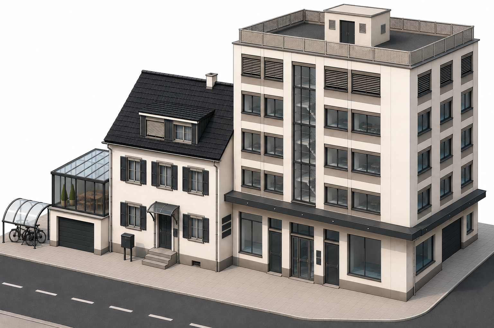

Farbwirkung zurückbringen
Geeignete beschichtete Metalloberflächen werden sichtbar aufgefrischt, ohne einen neuen Farbton aufzutragen.
Anwendungen
Im Mittelpunkt stehen verwitterte, technisch intakte pulverbeschichtete Metallbauteile. Andere organisch beschichtete Metalloberflächen beurteilen wir vor der Ausführung individuell.

Warum RECOLORO?
RECOLORO richtet sich an Bauteile, die technisch intakt sind, aber sichtbar an Farbtiefe verloren haben. Die bestehende Oberfläche bleibt der Ausgangspunkt.
Geeignete beschichtete Metalloberflächen werden sichtbar aufgefrischt, ohne einen neuen Farbton aufzutragen.
Wo Bauteil und Beschichtung technisch intakt sind, kann die Auffrischung eine Alternative zu vorschnellem Ersatz oder Neulackierung sein.
Fotos ermöglichen eine erste Einschätzung. Die definitive Eignung hängt von Untergrund, Zustand, Exposition und Ausführung ab.
So funktioniert RECOLORO
Sie senden uns Bauteil, Objekt-PLZ und wenn möglich Fotos.
Wir beurteilen Beschichtung, Zustand und Zugänglichkeit zunächst anhand Ihrer Angaben.
Eine passende Fachfirma prüft das Objekt und erstellt die konkrete Offerte.
Geeignete Oberflächen werden fachgerecht vorbereitet und behandelt.
Offerte anfragen
Fotos helfen bei der ersten Einschätzung. Die definitive Eignung wird am Objekt beurteilt. Ihre Anfrage wird geprüft und bei Passung an eine ausführende Fachfirma weitergeleitet.
FAQ
RECOLORO ist ein professionelles System zur optischen Auffrischung verwitterter, technisch intakter organisch beschichteter Oberflächen. Der Schwerpunkt liegt auf pulverbeschichteten Metallbauteilen.
Im Mittelpunkt stehen technisch intakte, pulverbeschichtete Metallbauteile, zum Beispiel Türen, Tore, Fensterprofile, Fassadenelemente oder Brüstungen. Andere organisch beschichtete Metalloberflächen werden individuell geprüft.
RECOLORO ersetzt keine notwendige Reparatur. Ist das Bauteil oder seine Beschichtung technisch beschädigt, wird zuerst geklärt, welche Instandsetzung erforderlich ist.
RECOLORO kann eine verwitterte Oberfläche sichtbar auffrischen. Das Ergebnis hängt von Art, Qualität und Alterung der vorhandenen Beschichtung ab; eine vollständige Wiederherstellung des ursprünglichen Farbtons wird nicht pauschal zugesichert.
Die Wirkungsdauer hängt wesentlich von Ausgangsbeschichtung, Exposition, mechanischer Belastung und fachgerechter Ausführung ab. Deshalb gibt es keine allgemeine, objektunabhängige Haltbarkeitszusage.
Die Anwendung erfolgt durch geschulte gewerbliche Anwender oder Fachbetriebe. RECOLORO RC ist nicht für die Abgabe an private Endverbraucher vorgesehen.
Die Kosten hängen unter anderem von Bauteil, Fläche, Zustand, Zugänglichkeit und den Bedingungen am Objekt ab. Nach der Eignungsprüfung wird eine objektbezogene Offerte erstellt.
Sie senden die wichtigsten Angaben und wenn möglich Fotos. Nach einer ersten Prüfung wird die Anfrage bei Passung an eine ausführende Fachfirma weitergeleitet, die das Objekt beurteilt und die Offerte erstellt.